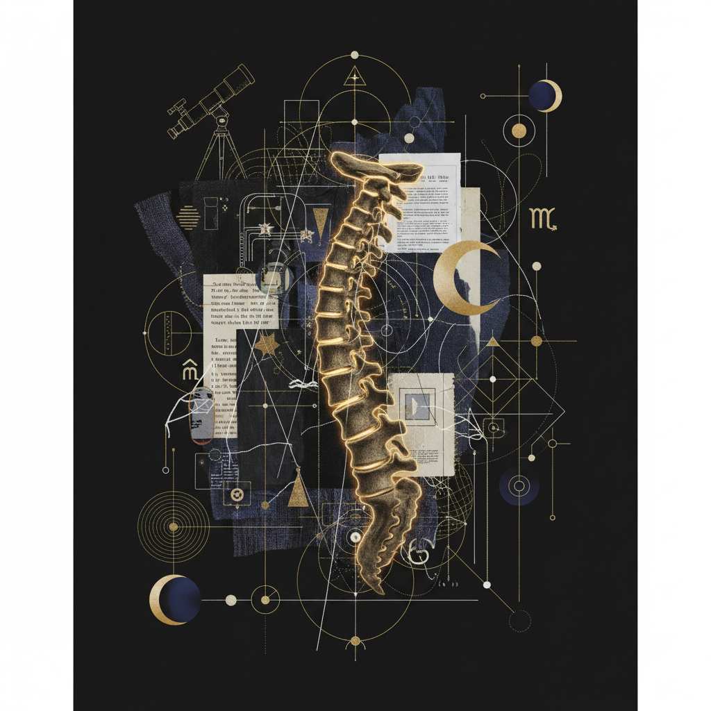
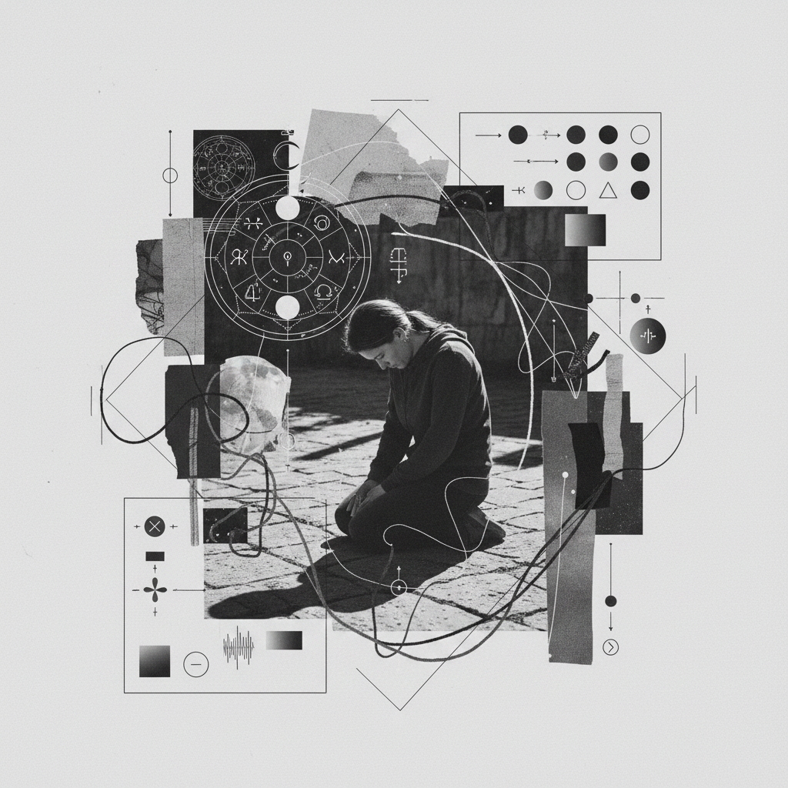

Womb to Bone

Fig 1.0: Structural Integrity
"The softness of the womb provides the safety necessary for the density of the bone to eventually hold its own weight."
Marginalia: Folio 82
I. The Soft Origin
Begin your investigation at the Cancer Full Moon. This is the peak of the lunar-tidal influence, where the emotional body is most fluid. We call this the 'Womb' phase—not merely biological, but the psychological container of one's most tender self-concepts. The work here is receptive, stomach-centered, and focused on the quality of nourishment you allow into your private sanctum.
II. Skeletal Grounding Protocols
The Knee-to-Earth Axis
A ritual of physical descent. To build legacy, one must first learn the weight of their own structure against the soil.

Structural Fidelity
Examine the architectural integrity of your long-term goals.
Legacy Script
Draft the first sentence of your hundred-year impact statement.
The Graduate Thesis
Advanced research into the Capricorn New Moon shift. Requires the 'Silence and Stone' prerequisite.
Graduate Research Prompt
"In the transition from the lunar moisture of Cancer to the Saturnian grit of Capricorn, what part of your history must calcify to become a foundation, and what part must be shed like old skin?"